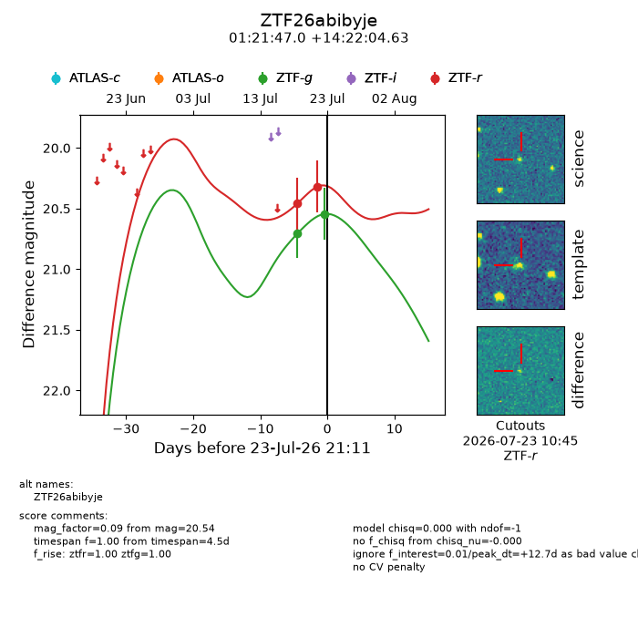
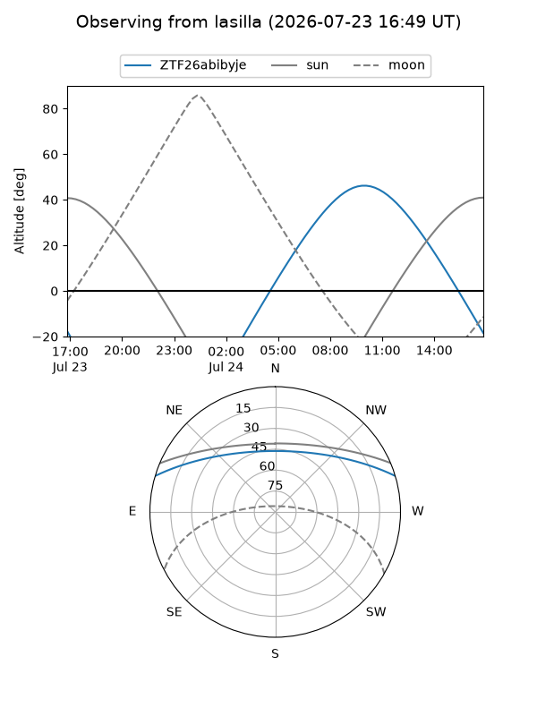
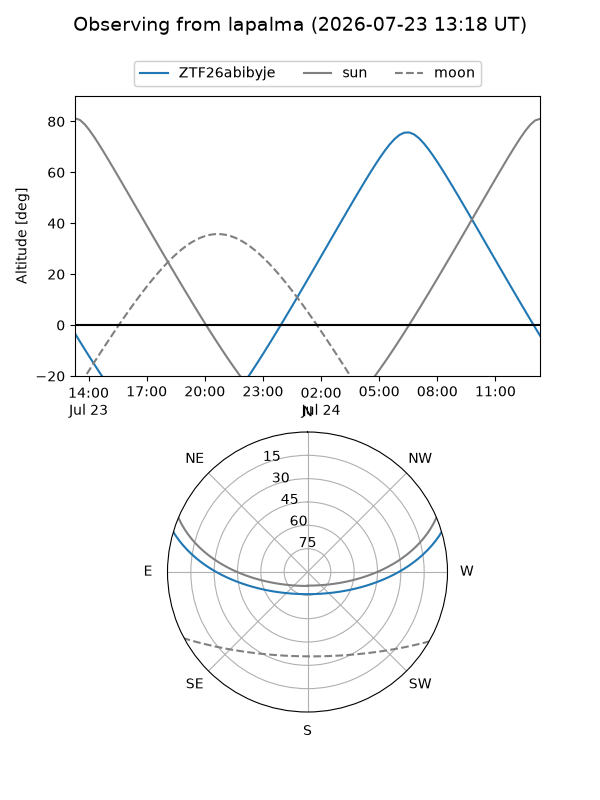
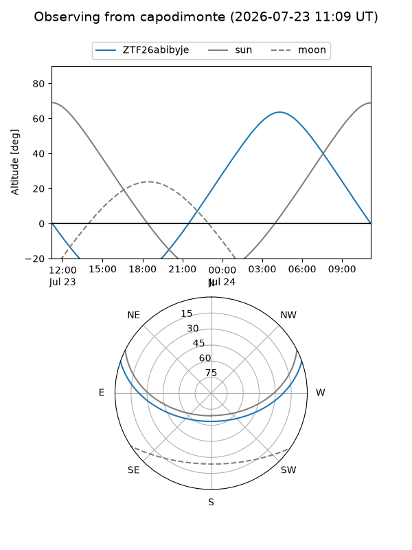
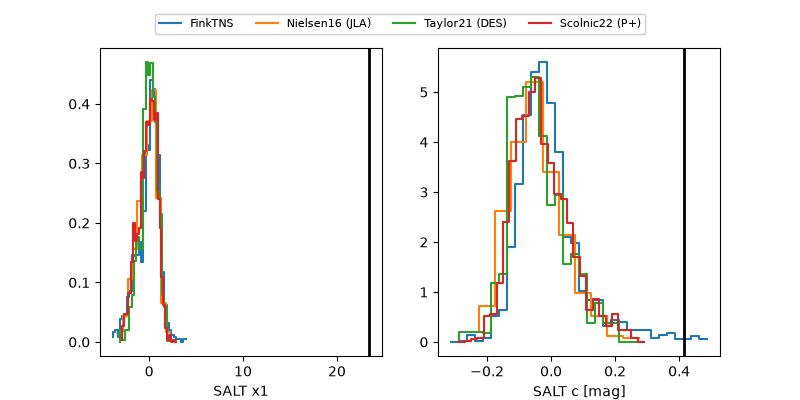

ZTF26abibyje
Target ZTF26abibyje at 2026-07-23 21:14
Aliases and brokers:
FINK-ZTF: ztf.fink-portal.org/ZTF26abibyje
Lasair-ZTF: lasair-ztf.lsst.ac.uk/objects/ZTF26abibyje
ALeRCE-ZTF: alerce.online/object/ZTF26abibyje
Direct TNS query: direct search
alt names
ZTF26abibyje (ztf,fink_ztf)
Coordinates:
equatorial (ra, dec) = 20.4459,+14.36795
equatorial (HMS+DMS) = 01:21:47.02,+14:22:04.63
galactic (l, b) = (133.9196,-47.85534)
Flags:
peak dt: +12.7
Photometry:
last ztfg=20.54, ztfr=20.32
2 ztfg, 2 ztfr detections
Lightcurve

Visibility



Additional plots
